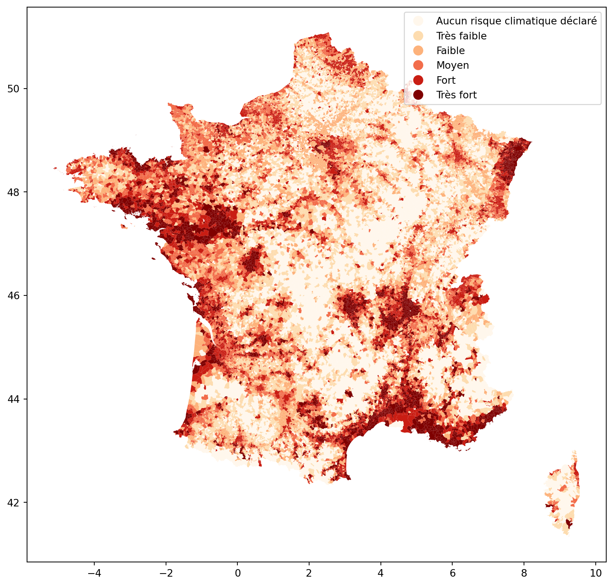
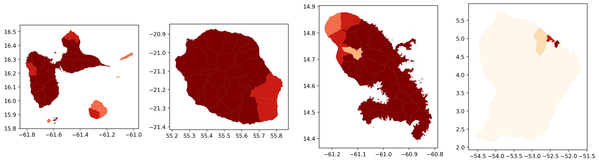
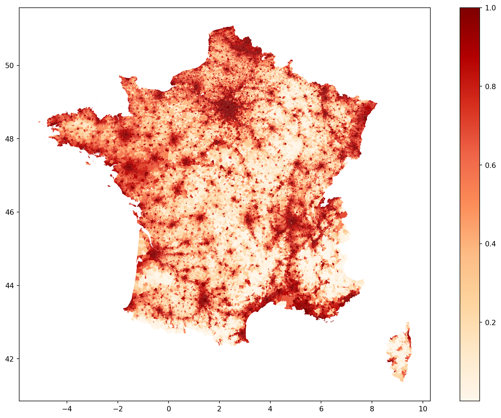
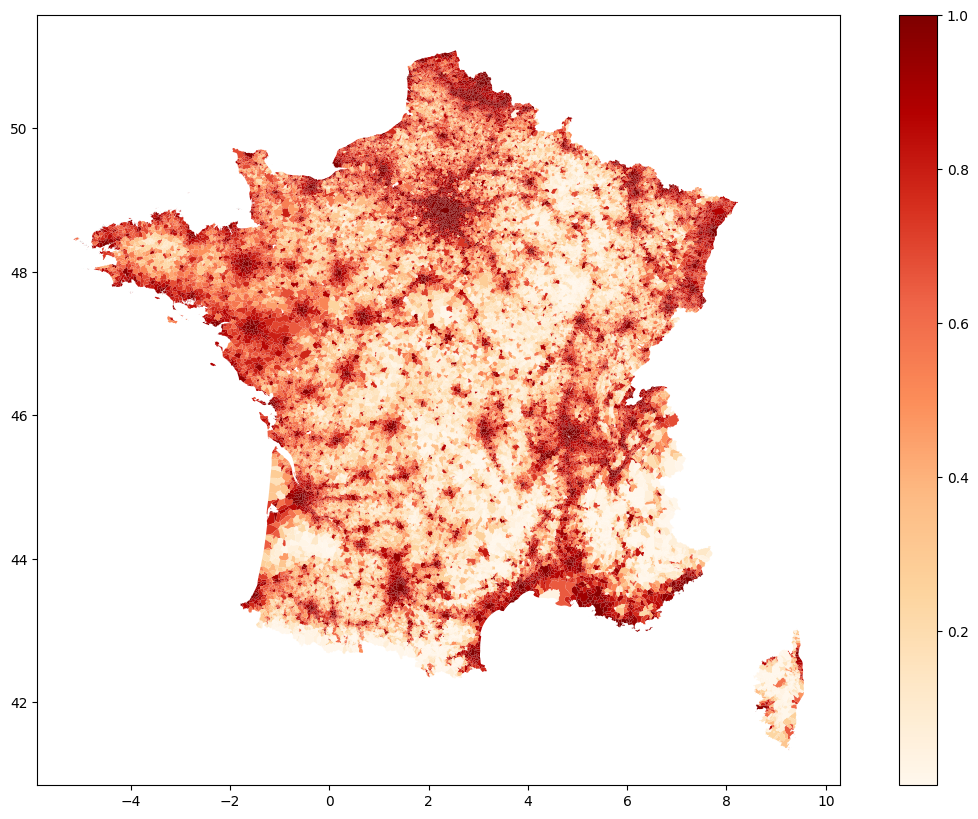
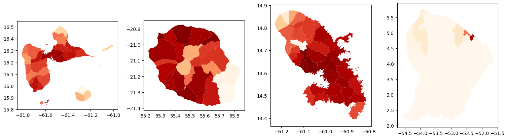
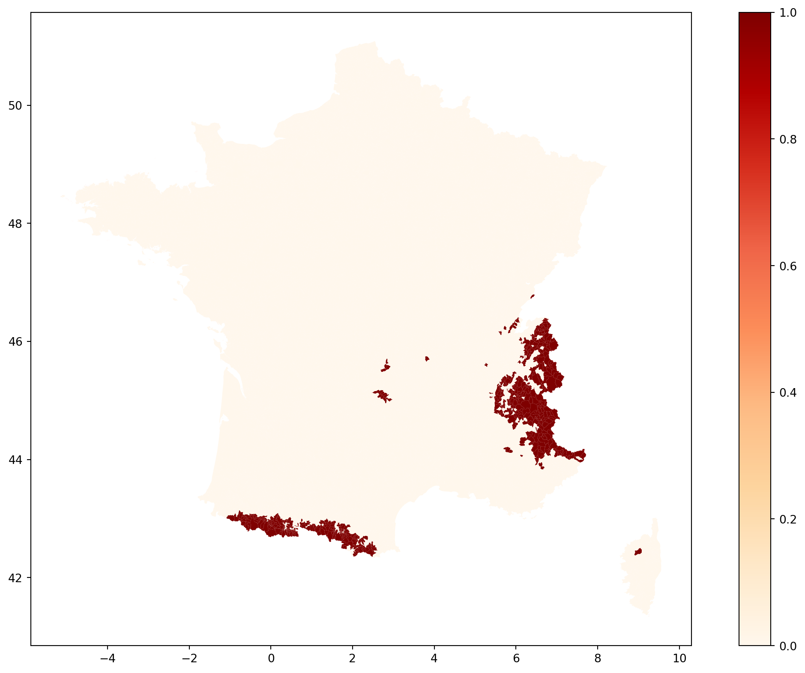
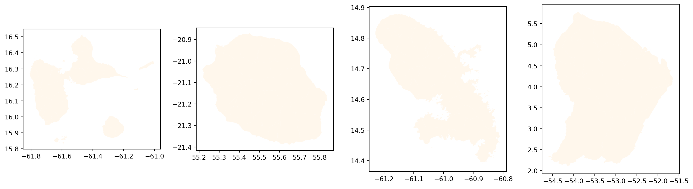
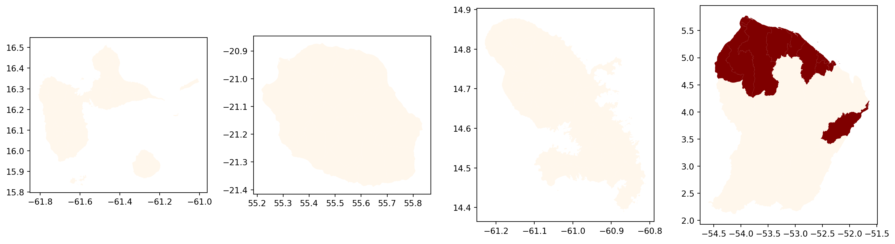
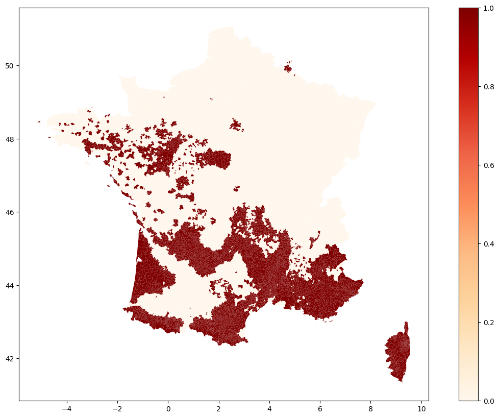
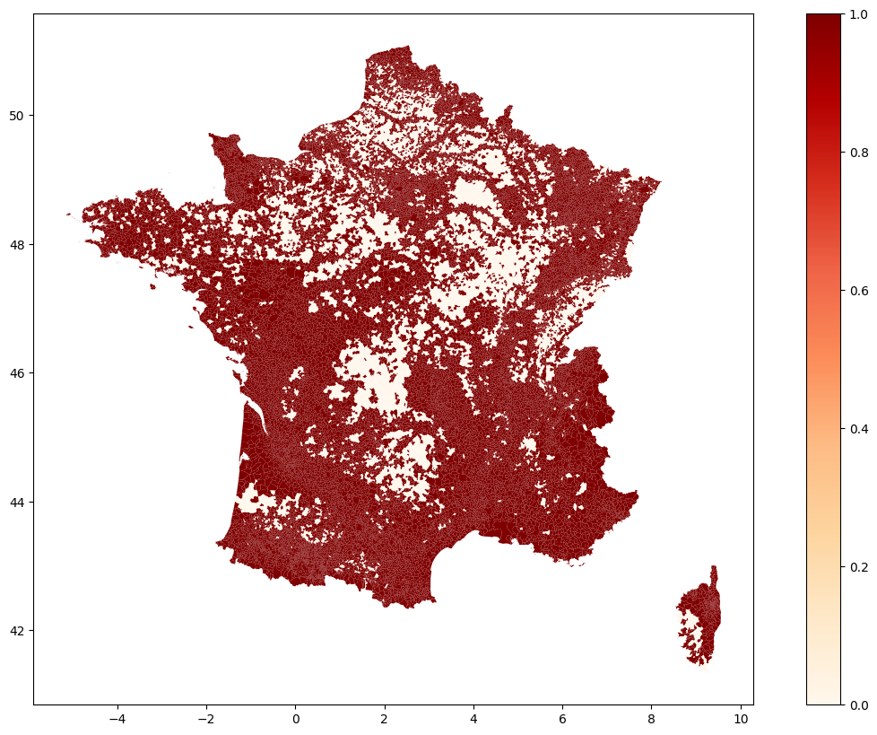

Afficher le code
import numpy as np
import pandas as pd
import matplotlib.pyplot as plt
import seaborn as sns
import datetimeObjectif: Déterminer un indice d’exposition des communes aux risques climatique.
Méthodologie: > Calcul de l’indice d’exposition \[
Exposition = note relative au nombre d’aléas climatiques × note relative à la densité de population / 10
= [(nombre d’aléas déclarés/nombre d’aléas possibles × 10) × (quantile de la densité de population × 10)] / 10
\]
$$
NB_ALEAclim = ALEAinondation + ALEAfeu + ALEAtempête + ALEAavalanche + ALEAmvt
$$Discrétisation en classes d’exposition: Application d’une segmentation à la Jenks avec en amont six classes spécifiées.
Données: >Base 1: Aléas climatiques par commune et catastrophes naturelles >> Les aléas climatiques sont estimés à partir des communes déclarées à risques majeurs par les services de l’État dans la base de données « gestion assistée des procédures administratives relatives aux risques naturels et technologiques » gérée par les services du ministère en charge de l’Environnement (MTES/DGPR, Gaspar 2017). >> Pour un aléa donné, il est considéré que cet aléa est identifié sur cette commune : >>> si la commune a été déclarée à risque pour cet aléa par les services de l’État (source : MTES, Gaspar, 2017. Traitements : SDES, 2018) ; >>> ou si cette commune a fait l’objet d’au moins trois arrêtés de Cat-Nat pour cet aléa entre 1982 et la date considérée (source : MTES/DGPR, Gaspar, 2016).
Base 2: Densité de la population par commune > Données issues du recensement de la population. Nous nous interesserons aux données de 2010, 2015 et 2021. > Pour chaque année on considérera comme densité la densité la plus récente connue.
Pour aller plus loin: On pourra explorer la possibilité d’inclure la fréquence des catastrophes naturelles dans le calcul de l’indice d’exposition.
L’indicateur d’exposition des populations aux risques climatiques confronte l’aléa (événement naturel potentiellement dangereux, d’occurrence et d’intensité données) et les enjeux (populations ou biens susceptibles d’être affectés par le phénomène naturel). En l’occurrence, l’indicateur, déterminé à l’échelle communale, résulte du croisement entre la densité de population et le nombre d’aléas climatiques identifiés et déclarés par les services de l’État pour chaque commune.
Ces aléas naturels correspondent à ceux susceptibles d’être directement ou indirectement influencés par le changement climatique :
avalanches,
Phénomène atmosphérique:
> « cyclones/ouragan (vent) »
> « tempête et grains (vent) »
Si une commune est déclarée à risque majeur pour ces deux aléas, pour autant elle n’est identifiée à risque « phénomènes météorologiques » qu’une seule fois.
feux de forêt,
inondations:
> crue à débordement de cours d’eau,
> crue torrentielle ou à montée rapide de cours d’eau,
> ruissellement et coulée de boue,
> lave torrentielle (torrent et talweg),
> remontée de nappes naturelles,
> submersion marine.
Dès lors qu’au moins l’un de ces types d’aléa est identifié pour une commune, celle-ci est déclarée à risque majeur « inondation ». Par conséquent, si une commune fait l’objet par exemple d’une déclaration à risque majeur « crue par débordement de cours d’eau », mais également « ruissellement et coulée de boue », pour autant elle n’est identifiée à risque « inondation » qu’une seule fois.
mouvements de terrain:
> affaissement et effondrement liés aux cavités souterraines (hors mines),
> éboulement,
> chute de pierres et de blocs,
> glissement de terrain,
> avancée dunaire,
> recul du trait de côte et de falaises,
> tassement différentiel
Dès lors qu’au moins l’un de ces types d’aléa est identifié dans une commune, celle-ci est déclarée à risque majeur « mouvement de terrain ». Si une commune est par exemple déclarée à risque majeur « affaissements et effondrements liés aux cavités souterraines » et « tassements différentiels », elle n’est identifiée à risque mouvement de terrain qu’une seule fois.
Ainsi, l’exposition des populations se révèle d’autant plus forte, que la densité de population de la commune, d’une part, et le nombre d’aléas climatiques identifiés et déclarés par les services de l’État d’autre part, sont élevés.
C:\Users\DEBA\AppData\Local\Temp\ipykernel_62216\2277590488.py:6: DtypeWarning: Columns (3) have mixed types. Specify dtype option on import or set low_memory=False.
catnat = pd.read_csv("../Data/catnat_gaspar.csv", sep=";")| cod_commune | lib_commune | lib_risque | |
|---|---|---|---|
| 0 | 01001 | L'Abergement-Clémenciat | Inondation |
| 1 | 01001 | L'Abergement-Clémenciat | Par une crue à débordement lent de cours d'eau |
| 2 | 01001 | L'Abergement-Clémenciat | Séisme |
| 3 | 01001 | L'Abergement-Clémenciat | Transport de marchandises dangereuses |
| 4 | 01002 | L'Abergement-de-Varey | Mouvement de terrain |
array(['Inondation', "Par une crue à débordement lent de cours d'eau",
'Séisme', 'Transport de marchandises dangereuses',
'Mouvement de terrain', 'Glissement de terrain',
"Par une crue torrentielle ou à montée rapide de cours d'eau",
'Rupture de barrage',
'Eboulement ou chutes de pierres et de blocs', 'Risque industriel',
'Effet thermique', 'Effet toxique', 'Effet de projection',
'Nucléaire', 'Avalanche', 'Par ruissellement et coulée de boue',
'Effet de surpression', 'Feu de forêt', 'Affaissement minier',
'Effondrements localisés', 'Tassements',
'Glissements ou mouvements de pente', 'Tassements différentiels',
'Affaissements progressifs', 'Emissions en surface de gaz de mine',
'Radon', 'Par submersion marine',
'Recul du trait de côte et de falaises',
'Effondrements généralisés', 'Engins de guerre',
"Phénomène lié à l'atmosphère", 'Neige et pluies verglaçantes',
'Par remontées de nappes naturelles', 'Ecroulements rocheux',
'Inondations de terrains miniers',
'Pollution des eaux souterraines et de surface',
'Pollution des sédiments et sols', 'Tempête et grains (vent)',
'Autre risque', 'Avancée dunaire', nan,
'Par lave torrentielle (torrent et talweg)',
'Echauffement des terrains de dépôts', 'Foudre', 'Grêle',
'Coulées', 'Cyclone / Ouragan (vent)', 'Eruption volcanique'],
dtype=object)# Spécification des aléas climatiques
risque.loc[risque.lib_risque.isin(['Cyclone / Ouragan (vent)',
'Tempête et grains (vent)'
]), "lib_risque"] = "Phénomène atmosphérique"
risque.loc[risque.lib_risque.isin(['Inondation',
"Par une crue à débordement lent de cours d'eau",
"Par une crue torrentielle ou à montée rapide de cours d'eau",
'Par ruissellement et coulée de boue',
'Par submersion marine',
'Par remontées de nappes naturelles',
'Par lave torrentielle (torrent et talweg)'
]), "lib_risque"] = "Inondation"
risque.loc[risque.lib_risque.isin(['Mouvement de terrain',
'Glissement de terrain',
'Eboulement ou chutes de pierres et de blocs',
'Tassements différentiels',
'Recul du trait de côte et de falaises',
'Avancée dunaire',
]), "lib_risque"] = 'Mouvement de Terrain'
risque_climat = risque[risque.lib_risque.isin(['Avalanche',
"Phénomène atmosphérique",
'Feu de forêt',
"Inondation",
'Mouvement de Terrain' ])]array(['Inondation', 'Mouvement de Terrain', 'Avalanche', 'Feu de forêt',
'Phénomène atmosphérique'], dtype=object)| cod_nat_catnat | cod_commune | lib_commune | num_risque_jo | lib_risque_jo | dat_deb | dat_fin | dat_pub_arrete | dat_pub_jo | dat_maj | |
|---|---|---|---|---|---|---|---|---|---|---|
| 0 | BUDD8750027A | 06120 | Saint-Étienne-de-Tinée | 63 | Glissement de Terrain | 1985-01-01 00:00:00.000 | 1986-12-31 00:00:00.000 | 1987-05-20 00:00:00.000 | 1987-05-24 00:00:00.000 | 2022-05-20 15:53:47.090 |
| 1 | BUDD8750038A | 2B050 | Calvi | 54 | Inondations et/ou Coulées de Boue | 1987-01-14 00:00:00.000 | 1987-01-15 00:00:00.000 | 1987-06-24 00:00:00.000 | 1987-07-10 00:00:00.000 | 2022-05-20 15:53:47.111 |
| 2 | BUDD8750038A | 30006 | Aimargues | 54 | Inondations et/ou Coulées de Boue | 1987-02-11 00:00:00.000 | 1987-02-13 00:00:00.000 | 1987-06-24 00:00:00.000 | 1987-07-10 00:00:00.000 | 2022-05-20 15:53:47.138 |
| 3 | BUDD8750038A | 30020 | Aubord | 54 | Inondations et/ou Coulées de Boue | 1987-02-11 00:00:00.000 | 1987-02-13 00:00:00.000 | 1987-06-24 00:00:00.000 | 1987-07-10 00:00:00.000 | 2022-05-20 15:53:47.138 |
| 4 | BUDD8750038A | 30033 | Beauvoisin | 54 | Inondations et/ou Coulées de Boue | 1987-02-11 00:00:00.000 | 1987-02-13 00:00:00.000 | 1987-06-24 00:00:00.000 | 1987-07-10 00:00:00.000 | 2022-05-20 15:53:47.138 |
| dat_deb | dat_fin | dat_pub_arrete | dat_pub_jo | dat_maj | |
|---|---|---|---|---|---|
| count | 261331 | 261331 | 261331 | 261331 | 261331 |
| mean | 1999-11-06 15:22:36.803440768 | 2000-01-11 13:39:34.960490752 | 2000-05-19 08:50:09.838097920 | 2000-05-28 11:44:42.391296896 | 2022-06-26 01:23:04.497398016 |
| min | 1982-08-15 00:00:00 | 1982-08-15 00:00:00 | 1982-09-21 00:00:00 | 1982-09-30 00:00:00 | 2022-05-20 15:22:19.014000 |
| 25% | 1989-05-01 00:00:00 | 1990-02-16 00:00:00 | 1990-03-16 00:00:00 | 1990-03-23 00:00:00 | 2022-05-20 15:55:32.884000 |
| 50% | 1999-12-25 00:00:00 | 1999-12-29 00:00:00 | 1999-12-29 00:00:00 | 1999-12-30 00:00:00 | 2022-05-24 11:17:06.953999872 |
| 75% | 2009-01-24 00:00:00 | 2009-01-27 00:00:00 | 2009-01-28 00:00:00 | 2009-01-29 00:00:00 | 2022-05-24 11:39:20.860999936 |
| max | 2025-01-23 01:00:00 | 2025-02-05 01:00:00 | 2025-02-12 01:00:00 | 2025-02-18 01:00:00 | 2025-02-20 01:00:00 |
array(['Glissement de Terrain', 'Inondations et/ou Coulées de Boue',
'Mouvement de Terrain', 'Avalanche', 'Secousse Sismique',
'Inondations Remontée Nappe',
"Chocs Mécaniques liés à l'action des Vagues",
'Effondrement et/ou Affaisement',
'Eboulement et/ou Chute de Blocs', 'Sécheresse',
'Vents Cycloniques', 'Raz de Marée', 'Lave Torrentielle',
'Tempête', 'Poids de la Neige',
'Glissement et Effondrement de Terrain',
'Glissement et Eboulement Rocheux', 'Coulée de Boue', 'Divers',
'Eruption Volcanique', 'Grêle',
'Mouvements de terrain différentiels consécutifs à la sécheresse et à la réhydratation des sols',
"Choc M�caniques li�s � l'action des Vagues", 'Séismes',
'Mouvements de terrains (hors sécheresse géotechnique)',
'Inondations par choc mécanique des vagues'], dtype=object)# Spécification des aléas climatiques
catnat.loc[catnat.lib_risque_jo.isin(['Vents Cycloniques',
'Tempête'
]), "lib_risque_jo"] = "Phénomène atmosphérique"
catnat.loc[catnat.lib_risque_jo.isin(['Inondations et/ou Coulées de Boue',
'Inondations Remontée Nappe',
'Lave Torrentielle', 'Coulée de Boue'
]), "lib_risque_jo"] = "Inondation"
catnat.loc[catnat.lib_risque_jo.isin(['Glissement de Terrain',
'Mouvement de Terrain','Effondrement et/ou Affaisement',
'Eboulement et/ou Chute de Blocs',
'Glissement et Effondrement de Terrain',
'Mouvements de terrain différentiels consécutifs à la sécheresse et à la réhydratation des sols',
'Glissement et Eboulement Rocheux',
'Mouvements de terrains (hors sécheresse géotechnique)'
]), "lib_risque_jo"] = 'Mouvement de Terrain'array(['Mouvement de Terrain', 'Inondation', 'Avalanche',
'Secousse Sismique', "Chocs Mécaniques liés à l'action des Vagues",
'Sécheresse', 'Phénomène atmosphérique', 'Raz de Marée',
'Poids de la Neige', 'Divers', 'Eruption Volcanique', 'Grêle',
"Choc M�caniques li�s � l'action des Vagues", 'Séismes',
'Inondations par choc mécanique des vagues'], dtype=object)# Restriction des catnat au périmètres des aléas climatiques
catnat_climat = catnat[catnat.lib_risque_jo.isin(['Mouvement de Terrain', 'Inondation', 'Avalanche', 'Phénomène atmosphérique'])]
catnat_climat.rename(columns = {'lib_risque_jo': 'lib_risque'}, inplace=True)
def alea_commune(catnat_climat, risque_climat, date_fin):
# catnat_reconnue depuis 1982 jusqu'à date_fin
data = catnat_climat[catnat_climat.dat_fin.dt.year <= date_fin]
data = data.groupby(['cod_commune','lib_commune','lib_risque']).agg(nb_arret = ('lib_risque','count')).reset_index()
data = data[data.nb_arret>=3]
# Consolidation de la base des risque par commune
data_alea_climat = pd.concat([risque_climat[['cod_commune','lib_commune','lib_risque']],
data[data.nb_arret>=3][['cod_commune','lib_commune','lib_risque']]]) # On complete la liste des communes et risques
data_alea_climat.drop_duplicates(inplace = True)
# Passage de chaque type de risque en clonne
data_alea_climat = pd.get_dummies(data_alea_climat, columns = ['lib_risque'])
data_alea_climat.rename(columns = {'lib_risque_Avalanche': 'Avalanche',
'lib_risque_Inondation': 'Inondation',
'lib_risque_Mouvement de Terrain': 'Mouvement de Terrain',
'lib_risque_Phénomène atmosphérique': 'Phénomène atmosphérique',
'lib_risque_Feu de forêt': 'Feu de forêt'},
inplace = True)
data_alea_climat = data_alea_climat.groupby(['cod_commune', 'lib_commune']).agg('sum').reset_index()
# Nb alea
data_alea_climat["nb_alea"] = data_alea_climat['Avalanche'] + data_alea_climat['Inondation'] +\
data_alea_climat['Mouvement de Terrain'] + data_alea_climat['Phénomène atmosphérique'] +\
data_alea_climat['Feu de forêt']
# Note relative à l'aléa climatique
data_alea_climat["note_alea"] = data_alea_climat["nb_alea"]*10 / 5 # 5 représente le nombre total d'aléa possibles
return data_alea_climatC:\Users\DEBA\AppData\Local\Temp\ipykernel_62216\2131813539.py:3: SettingWithCopyWarning:
A value is trying to be set on a copy of a slice from a DataFrame
See the caveats in the documentation: https://pandas.pydata.org/pandas-docs/stable/user_guide/indexing.html#returning-a-view-versus-a-copy
catnat_climat.rename(columns = {'lib_risque_jo': 'lib_risque'}, inplace=True)| cod_commune | lib_commune | Avalanche | Feu de forêt | Inondation | Mouvement de Terrain | Phénomène atmosphérique | nb_alea | note_alea | |
|---|---|---|---|---|---|---|---|---|---|
| 0 | 01001 | L'Abergement-Clémenciat | 0 | 0 | 1 | 0 | 0 | 1 | 2.0 |
| 1 | 01002 | L'Abergement-de-Varey | 0 | 0 | 0 | 1 | 0 | 1 | 2.0 |
| 2 | 01004 | Ambérieu-en-Bugey | 0 | 0 | 1 | 1 | 0 | 2 | 4.0 |
| 3 | 01007 | Ambronay | 0 | 0 | 1 | 0 | 0 | 1 | 2.0 |
| 4 | 01009 | Andert-et-Condon | 0 | 0 | 1 | 0 | 0 | 1 | 2.0 |
array(['Séisme', 'Transport de marchandises dangereuses',
'Rupture de barrage', 'Nucléaire', 'Affaissement minier',
'Effondrements localisés', 'Tassements',
'Glissements ou mouvements de pente', 'Affaissements progressifs',
'Emissions en surface de gaz de mine', 'Risque industriel',
'Effet toxique', 'Radon', "Phénomène lié à l'atmosphère",
'Neige et pluies verglaçantes', 'Effet thermique', 'Autre risque',
'Effet de surpression', 'Effondrements généralisés',
'Effet de projection', 'Engins de guerre', 'Grêle'], dtype=object)array(['Inondation', 'Mouvement de Terrain',
"Chocs Mécaniques liés à l'action des Vagues", 'Sécheresse',
'Secousse Sismique', 'Poids de la Neige',
'Phénomène atmosphérique', 'Grêle', 'Séismes'], dtype=object)| Unnamed: 0 | Unnamed: 1 | Unnamed: 2 | Densité de population | |
|---|---|---|---|---|
| 0 | codgeo | libgeo | an | dens_pop |
| 1 | 01001 | L'Abergement-Clémenciat | 1968 | 21.82 |
| 2 | 01001 | L'Abergement-Clémenciat | 1975 | 23.14 |
| 3 | 01001 | L'Abergement-Clémenciat | 1982 | 30 |
| 4 | 01001 | L'Abergement-Clémenciat | 1990 | 36.42 |
# Formatage de la table des densités
densite_pop.columns = densite_pop.loc[0]
densite_pop = densite_pop[1:]
densite_pop.rename(columns = {'codgeo': 'cod_commune', 'libgeo': 'lib_commune'}, inplace=True)
densite_pop.an = densite_pop.an.astype('int')
densite_pop.dens_pop = densite_pop.dens_pop.astype('float')
densite_pop.head()| cod_commune | lib_commune | an | dens_pop | |
|---|---|---|---|---|
| 1 | 01001 | L'Abergement-Clémenciat | 1968 | 21.82 |
| 2 | 01001 | L'Abergement-Clémenciat | 1975 | 23.14 |
| 3 | 01001 | L'Abergement-Clémenciat | 1982 | 30.00 |
| 4 | 01001 | L'Abergement-Clémenciat | 1990 | 36.42 |
| 5 | 01001 | L'Abergement-Clémenciat | 1999 | 45.79 |
def density_commune(densite_pop, date):
"""date: est l'année de recensement considérée [2010, 2015, 2021]"""
data_dens_pop = densite_pop[densite_pop.an == date]
# Topper les communes sans densité renseignée
data_dens_pop['top_dens_nan'] = 0
data_dens_pop.loc[data_dens_pop.dens_pop.isna(), 'top_dens_nan'] = 1
# Note relative à la densité de la population
data_dens_pop.loc[data_dens_pop.top_dens_nan == 0, 'q_dens'] = data_dens_pop.loc[data_dens_pop.top_dens_nan == 0,'dens_pop']\
.rank(method='min', pct=True) # Quantile de densité de population
data_dens_pop['note_dens'] = data_dens_pop['q_dens']*10
return data_dens_popC:\Users\DEBA\AppData\Local\Temp\ipykernel_62216\1042087.py:6: SettingWithCopyWarning:
A value is trying to be set on a copy of a slice from a DataFrame.
Try using .loc[row_indexer,col_indexer] = value instead
See the caveats in the documentation: https://pandas.pydata.org/pandas-docs/stable/user_guide/indexing.html#returning-a-view-versus-a-copy
data_dens_pop['top_dens_nan'] = 0
C:\Users\DEBA\AppData\Local\Temp\ipykernel_62216\1042087.py:10: SettingWithCopyWarning:
A value is trying to be set on a copy of a slice from a DataFrame.
Try using .loc[row_indexer,col_indexer] = value instead
See the caveats in the documentation: https://pandas.pydata.org/pandas-docs/stable/user_guide/indexing.html#returning-a-view-versus-a-copy
data_dens_pop.loc[data_dens_pop.top_dens_nan == 0, 'q_dens'] = data_dens_pop.loc[data_dens_pop.top_dens_nan == 0,'dens_pop']\
C:\Users\DEBA\AppData\Local\Temp\ipykernel_62216\1042087.py:12: SettingWithCopyWarning:
A value is trying to be set on a copy of a slice from a DataFrame.
Try using .loc[row_indexer,col_indexer] = value instead
See the caveats in the documentation: https://pandas.pydata.org/pandas-docs/stable/user_guide/indexing.html#returning-a-view-versus-a-copy
data_dens_pop['note_dens'] = data_dens_pop['q_dens']*10| cod_commune | lib_commune | an | dens_pop | top_dens_nan | q_dens | note_dens | |
|---|---|---|---|---|---|---|---|
| 8 | 01001 | L'Abergement-Clémenciat | 2021 | 52.33 | 0 | 0.581236 | 5.812355 |
| 16 | 01002 | L'Abergement-de-Varey | 2021 | 29.02 | 0 | 0.392617 | 3.926168 |
| 24 | 01004 | Ambérieu-en-Bugey | 2021 | 603.82 | 0 | 0.956926 | 9.569264 |
| 32 | 01005 | Ambérieux-en-Dombes | 2021 | 119.31 | 0 | 0.792279 | 7.922788 |
| 40 | 01006 | Ambléon | 2021 | 19.15 | 0 | 0.262480 | 2.624796 |
Certaines commune ont été intégrées dans d’autres et d’autres ont été créées.
| cod_commune | lib_commune | Avalanche | Feu de forêt | Inondation | Mouvement de Terrain | Phénomène atmosphérique | nb_alea | note_alea | |
|---|---|---|---|---|---|---|---|---|---|
| 28 | 01039 | Béon | 0 | 0 | 1 | 1 | 0 | 2 | 4.0 |
| 316 | 02077 | Berzy-le-Sec | 0 | 0 | 1 | 0 | 0 | 1 | 2.0 |
| 2003 | 08294 | La Moncelle | 0 | 0 | 1 | 1 | 0 | 2 | 4.0 |
| 2376 | 09255 | Saint-Amans | 0 | 0 | 0 | 1 | 0 | 1 | 2.0 |
| 4473 | 16140 | Fontclaireau | 0 | 0 | 1 | 0 | 0 | 1 | 2.0 |
| 4625 | 16355 | Saint-Sulpice-de-Cognac | 0 | 0 | 1 | 0 | 0 | 1 | 2.0 |
| 5272 | 18131 | Lugny-Bourbonnais | 0 | 0 | 0 | 1 | 0 | 1 | 2.0 |
| 6538 | 24089 | Cazoulès | 0 | 1 | 1 | 1 | 0 | 3 | 6.0 |
| 6729 | 24314 | Orliaguet | 0 | 1 | 1 | 1 | 0 | 3 | 6.0 |
| 7039 | 25134 | Châtillon-sur-Lison | 0 | 0 | 1 | 0 | 0 | 1 | 2.0 |
| 7273 | 25549 | Sombacour | 0 | 0 | 0 | 1 | 0 | 1 | 2.0 |
| 7311 | 25628 | Villers-sous-Montrond | 0 | 0 | 1 | 1 | 0 | 2 | 4.0 |
| 7507 | 26219 | Mureils | 0 | 0 | 1 | 1 | 0 | 2 | 4.0 |
| 7696 | 27058 | Les Trois Lacs | 0 | 0 | 1 | 1 | 0 | 2 | 4.0 |
| 11354 | 35112 | Fleurigné | 0 | 0 | 1 | 0 | 1 | 2 | 4.0 |
| 15405 | 49321 | Saint-Sigismond | 0 | 1 | 1 | 1 | 1 | 4 | 8.0 |
| 15447 | 50015 | Annoville | 0 | 0 | 1 | 1 | 0 | 2 | 4.0 |
| 15944 | 51063 | Binson-et-Orquigny | 0 | 0 | 1 | 1 | 0 | 2 | 4.0 |
| 16431 | 51637 | Villers-sous-Châtillon | 0 | 0 | 0 | 1 | 0 | 1 | 2.0 |
| 18251 | 56049 | Croixanvec | 0 | 0 | 0 | 1 | 1 | 2 | 4.0 |
| 22318 | 64541 | Urdès | 0 | 0 | 1 | 0 | 0 | 1 | 2.0 |
| 24048 | 69152 | Pierre-Bénite | 0 | 0 | 1 | 1 | 1 | 3 | 6.0 |
| 25159 | 71492 | Saint-Ythaire | 0 | 0 | 1 | 0 | 0 | 1 | 2.0 |
| 28797 | 85037 | Breuil-Barret | 0 | 0 | 1 | 1 | 0 | 2 | 4.0 |
| 28801 | 85041 | Cezais | 0 | 0 | 1 | 1 | 0 | 2 | 4.0 |
| 28809 | 85053 | La Chapelle-aux-Lys | 0 | 0 | 1 | 1 | 0 | 2 | 4.0 |
| 28991 | 85271 | Saint-Sulpice-en-Pareds | 0 | 0 | 1 | 1 | 0 | 2 | 4.0 |
| 29022 | 85307 | La Faute-sur-Mer | 0 | 1 | 1 | 1 | 0 | 3 | 6.0 |
| 29230 | 86231 | Saint-Macoux | 0 | 0 | 1 | 1 | 1 | 3 | 6.0 |
| 30792 | 95282 | Gouzangrez | 0 | 0 | 1 | 0 | 0 | 1 | 2.0 |
| 31002 | 97501 | Miquelon-Langlade | 1 | 1 | 1 | 1 | 1 | 5 | 10.0 |
| 31003 | 97502 | Saint-Pierre | 1 | 1 | 1 | 1 | 1 | 5 | 10.0 |
| 31021 | 97701 | Saint-Barthélemy | 0 | 0 | 0 | 0 | 1 | 1 | 2.0 |
| 31022 | 97801 | Saint-Martin | 0 | 0 | 0 | 0 | 1 | 1 | 2.0 |
def indice_expo_climat(data_alea_climat, data_dens_pop):
# Completer les commune de data_climat sans alea
temp = data_dens_pop[~data_dens_pop.cod_commune.isin(data_alea_climat.cod_commune.unique())]
data_climat = pd.concat([data_alea_climat, temp[['cod_commune', 'lib_commune']]])
data_climat.fillna(0, inplace=True)
# Commune ayant non présentes dans les density_pop
temp2 = data_alea_climat[~data_alea_climat.cod_commune.isin(data_dens_pop.cod_commune.unique())]
data_climat['top_commune_chg'] = 0
data_climat.loc[data_climat.cod_commune.isin(temp2.cod_commune.unique()), 'top_commune_chg'] = 1
data_final = data_climat.merge(data_dens_pop[['cod_commune', 'dens_pop', 'top_dens_nan','q_dens', 'note_dens']],
on = 'cod_commune',
how = 'left')
# Calcul de l'exposition
data_final["note_expo"] = data_final['note_alea'] * data_final['note_dens'] / 10
return data_final| cod_commune | lib_commune | Avalanche | Feu de forêt | Inondation | Mouvement de Terrain | Phénomène atmosphérique | nb_alea | note_alea | top_commune_chg | dens_pop | top_dens_nan | q_dens | note_dens | note_expo | |
|---|---|---|---|---|---|---|---|---|---|---|---|---|---|---|---|
| 0 | 01001 | L'Abergement-Clémenciat | 0.0 | 0.0 | 1.0 | 0.0 | 0.0 | 1.0 | 2.0 | 0 | 52.33 | 0.0 | 0.581236 | 5.812355 | 1.162471 |
| 1 | 01002 | L'Abergement-de-Varey | 0.0 | 0.0 | 0.0 | 1.0 | 0.0 | 1.0 | 2.0 | 0 | 29.02 | 0.0 | 0.392617 | 3.926168 | 0.785234 |
| 2 | 01004 | Ambérieu-en-Bugey | 0.0 | 0.0 | 1.0 | 1.0 | 0.0 | 2.0 | 4.0 | 0 | 603.82 | 0.0 | 0.956926 | 9.569264 | 3.827706 |
| 3 | 01007 | Ambronay | 0.0 | 0.0 | 1.0 | 0.0 | 0.0 | 1.0 | 2.0 | 0 | 84.57 | 0.0 | 0.715554 | 7.155540 | 1.431108 |
| 4 | 01009 | Andert-et-Condon | 0.0 | 0.0 | 1.0 | 0.0 | 0.0 | 1.0 | 2.0 | 0 | 46.67 | 0.0 | 0.544062 | 5.440616 | 1.088123 |
cod_commune 0
lib_commune 0
Avalanche 0
Feu de forêt 0
Inondation 0
Mouvement de Terrain 0
Phénomène atmosphérique 0
nb_alea 0
note_alea 0
top_commune_chg 0
dens_pop 52
top_dens_nan 34
q_dens 52
note_dens 52
note_expo 52
dtype: int64Collecting jenkspy
Downloading jenkspy-0.4.1-cp312-cp312-win_amd64.whl.metadata (7.3 kB)
Requirement already satisfied: numpy in d:\deb\mywebsite\franckdeba-ws\.venv\lib\site-packages (from jenkspy) (2.0.2)
Downloading jenkspy-0.4.1-cp312-cp312-win_amd64.whl (224 kB)
Installing collected packages: jenkspy
Successfully installed jenkspy-0.4.1
Note: you may need to restart the kernel to use updated packages.[np.float64(0.0),
np.float64(0.5566915828965834),
np.float64(1.3429561531632157),
np.float64(2.258842397685941),
np.float64(3.29237907036687),
np.float64(4.641292207234299),
np.float64(7.964028983016869)]# Nombre de segment: 6
seuils = [0,1,2,3,4,5,6]
labels = ["Aucun aléa climatique",
"1 aléa climatique",
"2 aléas climatiques",
"3 aléas climatiques",
"4 aléas climatiques",
"5 aléas climatiques"]
# Ajouter une colonne de classe au DataFrame
exposition_2021['nb_alea'] = pd.cut(exposition_2021['nb_alea'], bins=seuils, labels=labels, include_lowest=True)['Aucun aléa climatique', '1 aléa climatique', '2 aléas climatiques', '3 aléas climatiques', '4 aléas climatiques']
Categories (6, object): ['Aucun aléa climatique' < '1 aléa climatique' < '2 aléas climatiques' < '3 aléas climatiques' < '4 aléas climatiques' < '5 aléas climatiques']Collecting geopandas
Downloading geopandas-1.1.1-py3-none-any.whl.metadata (2.3 kB)
Requirement already satisfied: numpy>=1.24 in d:\deb\mywebsite\franckdeba-ws\.venv\lib\site-packages (from geopandas) (2.0.2)
Collecting pyogrio>=0.7.2 (from geopandas)
Downloading pyogrio-0.11.1-cp312-cp312-win_amd64.whl.metadata (5.4 kB)
Requirement already satisfied: packaging in d:\deb\mywebsite\franckdeba-ws\.venv\lib\site-packages (from geopandas) (24.2)
Requirement already satisfied: pandas>=2.0.0 in d:\deb\mywebsite\franckdeba-ws\.venv\lib\site-packages (from geopandas) (2.2.3)
Collecting pyproj>=3.5.0 (from geopandas)
Downloading pyproj-3.7.2-cp312-cp312-win_amd64.whl.metadata (31 kB)
Collecting shapely>=2.0.0 (from geopandas)
Downloading shapely-2.1.2-cp312-cp312-win_amd64.whl.metadata (7.1 kB)
Requirement already satisfied: python-dateutil>=2.8.2 in d:\deb\mywebsite\franckdeba-ws\.venv\lib\site-packages (from pandas>=2.0.0->geopandas) (2.9.0.post0)
Requirement already satisfied: pytz>=2020.1 in d:\deb\mywebsite\franckdeba-ws\.venv\lib\site-packages (from pandas>=2.0.0->geopandas) (2025.1)
Requirement already satisfied: tzdata>=2022.7 in d:\deb\mywebsite\franckdeba-ws\.venv\lib\site-packages (from pandas>=2.0.0->geopandas) (2025.1)
Requirement already satisfied: certifi in d:\deb\mywebsite\franckdeba-ws\.venv\lib\site-packages (from pyogrio>=0.7.2->geopandas) (2025.1.31)
Requirement already satisfied: six>=1.5 in d:\deb\mywebsite\franckdeba-ws\.venv\lib\site-packages (from python-dateutil>=2.8.2->pandas>=2.0.0->geopandas) (1.17.0)
Downloading geopandas-1.1.1-py3-none-any.whl (338 kB)
Downloading pyogrio-0.11.1-cp312-cp312-win_amd64.whl (19.2 MB)
---------------------------------------- 0.0/19.2 MB ? eta -:--:--
- -------------------------------------- 0.5/19.2 MB 4.2 MB/s eta 0:00:05
-- ------------------------------------- 1.3/19.2 MB 3.5 MB/s eta 0:00:06
---- ----------------------------------- 2.4/19.2 MB 3.6 MB/s eta 0:00:05
------ --------------------------------- 3.1/19.2 MB 3.8 MB/s eta 0:00:05
------- -------------------------------- 3.7/19.2 MB 3.6 MB/s eta 0:00:05
-------- ------------------------------- 4.2/19.2 MB 3.5 MB/s eta 0:00:05
---------- ----------------------------- 5.0/19.2 MB 3.4 MB/s eta 0:00:05
----------- ---------------------------- 5.5/19.2 MB 3.2 MB/s eta 0:00:05
------------- -------------------------- 6.3/19.2 MB 3.3 MB/s eta 0:00:04
-------------- ------------------------- 6.8/19.2 MB 3.3 MB/s eta 0:00:04
---------------- ----------------------- 7.9/19.2 MB 3.4 MB/s eta 0:00:04
----------------- ---------------------- 8.4/19.2 MB 3.4 MB/s eta 0:00:04
------------------- -------------------- 9.2/19.2 MB 3.4 MB/s eta 0:00:03
-------------------- ------------------- 10.0/19.2 MB 3.4 MB/s eta 0:00:03
--------------------- ------------------ 10.5/19.2 MB 3.3 MB/s eta 0:00:03
----------------------- ---------------- 11.3/19.2 MB 3.3 MB/s eta 0:00:03
------------------------- -------------- 12.3/19.2 MB 3.4 MB/s eta 0:00:03
--------------------------- ------------ 13.1/19.2 MB 3.4 MB/s eta 0:00:02
---------------------------- ----------- 13.6/19.2 MB 3.4 MB/s eta 0:00:02
----------------------------- ---------- 14.2/19.2 MB 3.4 MB/s eta 0:00:02
------------------------------- -------- 15.2/19.2 MB 3.4 MB/s eta 0:00:02
-------------------------------- ------- 15.7/19.2 MB 3.4 MB/s eta 0:00:02
---------------------------------- ----- 16.5/19.2 MB 3.4 MB/s eta 0:00:01
------------------------------------ --- 17.3/19.2 MB 3.4 MB/s eta 0:00:01
------------------------------------- -- 18.1/19.2 MB 3.4 MB/s eta 0:00:01
--------------------------------------- 18.9/19.2 MB 3.4 MB/s eta 0:00:01
---------------------------------------- 19.2/19.2 MB 3.4 MB/s 0:00:05
Downloading pyproj-3.7.2-cp312-cp312-win_amd64.whl (6.3 MB)
---------------------------------------- 0.0/6.3 MB ? eta -:--:--
---- ----------------------------------- 0.8/6.3 MB 4.2 MB/s eta 0:00:02
--------- ------------------------------ 1.6/6.3 MB 4.4 MB/s eta 0:00:02
-------------- ------------------------- 2.4/6.3 MB 3.9 MB/s eta 0:00:02
---------------- ----------------------- 2.6/6.3 MB 3.8 MB/s eta 0:00:01
--------------------- ------------------ 3.4/6.3 MB 3.4 MB/s eta 0:00:01
------------------------ --------------- 3.9/6.3 MB 3.2 MB/s eta 0:00:01
---------------------------- ----------- 4.5/6.3 MB 3.1 MB/s eta 0:00:01
------------------------------- -------- 5.0/6.3 MB 3.0 MB/s eta 0:00:01
---------------------------------- ----- 5.5/6.3 MB 3.0 MB/s eta 0:00:01
---------------------------------------- 6.3/6.3 MB 3.0 MB/s 0:00:02
Downloading shapely-2.1.2-cp312-cp312-win_amd64.whl (1.7 MB)
---------------------------------------- 0.0/1.7 MB ? eta -:--:--
------------ --------------------------- 0.5/1.7 MB 3.4 MB/s eta 0:00:01
------------------------ --------------- 1.0/1.7 MB 3.0 MB/s eta 0:00:01
------------------------ --------------- 1.0/1.7 MB 3.0 MB/s eta 0:00:01
------------------------------ --------- 1.3/1.7 MB 1.9 MB/s eta 0:00:01
---------------------------------------- 1.7/1.7 MB 1.6 MB/s 0:00:01
Installing collected packages: shapely, pyproj, pyogrio, geopandas
---------------------------------------- 0/4 [shapely]
---------------------------------------- 0/4 [shapely]
---------------------------------------- 0/4 [shapely]
---------------------------------------- 0/4 [shapely]
---------------------------------------- 0/4 [shapely]
---------------------------------------- 0/4 [shapely]
---------------------------------------- 0/4 [shapely]
---------------------------------------- 0/4 [shapely]
---------------------------------------- 0/4 [shapely]
---------------------------------------- 0/4 [shapely]
---------------------------------------- 0/4 [shapely]
---------------------------------------- 0/4 [shapely]
---------------------------------------- 0/4 [shapely]
---------------------------------------- 0/4 [shapely]
---------------------------------------- 0/4 [shapely]
---------------------------------------- 0/4 [shapely]
---------------------------------------- 0/4 [shapely]
---------------------------------------- 0/4 [shapely]
---------------------------------------- 0/4 [shapely]
---------------------------------------- 0/4 [shapely]
---------------------------------------- 0/4 [shapely]
---------- ----------------------------- 1/4 [pyproj]
---------- ----------------------------- 1/4 [pyproj]
---------- ----------------------------- 1/4 [pyproj]
---------- ----------------------------- 1/4 [pyproj]
---------- ----------------------------- 1/4 [pyproj]
---------- ----------------------------- 1/4 [pyproj]
---------- ----------------------------- 1/4 [pyproj]
-------------------- ------------------- 2/4 [pyogrio]
-------------------- ------------------- 2/4 [pyogrio]
-------------------- ------------------- 2/4 [pyogrio]
-------------------- ------------------- 2/4 [pyogrio]
-------------------- ------------------- 2/4 [pyogrio]
------------------------------ --------- 3/4 [geopandas]
------------------------------ --------- 3/4 [geopandas]
------------------------------ --------- 3/4 [geopandas]
------------------------------ --------- 3/4 [geopandas]
------------------------------ --------- 3/4 [geopandas]
------------------------------ --------- 3/4 [geopandas]
------------------------------ --------- 3/4 [geopandas]
------------------------------ --------- 3/4 [geopandas]
------------------------------ --------- 3/4 [geopandas]
------------------------------ --------- 3/4 [geopandas]
------------------------------ --------- 3/4 [geopandas]
------------------------------ --------- 3/4 [geopandas]
------------------------------ --------- 3/4 [geopandas]
------------------------------ --------- 3/4 [geopandas]
------------------------------ --------- 3/4 [geopandas]
------------------------------ --------- 3/4 [geopandas]
------------------------------ --------- 3/4 [geopandas]
---------------------------------------- 4/4 [geopandas]
Successfully installed geopandas-1.1.1 pyogrio-0.11.1 pyproj-3.7.2 shapely-2.1.2
Note: you may need to restart the kernel to use updated packages.
# Ajout correspondance commune-département
com_dep_cor = pd.read_excel('../Data/table-appartenance-geo-communes-2025.xlsx', sheet_name='COM', skiprows=5)
com_dep_cor.rename(columns = {'CODGEO':'cod_commune', 'DEP':'cod_dep'}, inplace=True)
carte_france = carte_france.merge(com_dep_cor[['cod_commune', 'cod_dep']], on = 'cod_commune', how = 'left')| cod_commune | lib_commune | wikipedia | surf_ha | geometry | cod_dep | |
|---|---|---|---|---|---|---|
| 1015 | 26371 | Véronne | fr:Véronne | 2168.0 | POLYGON ((5.17059 44.72378, 5.17095 44.72457, ... | NaN |
| 2231 | 42252 | Saint-Laurent-Rochefort | fr:Saint-Laurent-Rochefort | 1574.0 | POLYGON ((3.87956 45.76996, 3.87962 45.77015, ... | NaN |
| 2234 | 42072 | La Côte-en-Couzan | fr:La Côte-en-Couzan | 909.0 | POLYGON ((3.79791 45.74904, 3.79815 45.74977, ... | NaN |
| 2408 | 59070 | Bermeries | fr:Bermeries | 529.0 | POLYGON ((3.72493 50.29002, 3.72711 50.29107, ... | NaN |
| 2548 | 42109 | L'Hôpital-sous-Rochefort | fr:L'Hôpital-sous-Rochefort | 114.0 | POLYGON ((3.92732 45.77658, 3.9274 45.77654, 3... | NaN |
| ... | ... | ... | ... | ... | ... | ... |
| 34212 | 16355 | Saint-Sulpice-de-Cognac | fr:Saint-Sulpice-de-Cognac | 2373.0 | POLYGON ((-0.46314 45.75191, -0.46299 45.75206... | NaN |
| 34696 | 35112 | Fleurigné | fr:Fleurigné | 1812.0 | POLYGON ((-1.14877 48.36651, -1.14873 48.36673... | NaN |
| 34747 | 22309 | Saint-Launeuc | fr:Saint-Launeuc | 1159.0 | POLYGON ((-2.40457 48.23438, -2.40024 48.23418... | NaN |
| 34783 | 22043 | Coëtlogon | fr:Coëtlogon | 1669.0 | POLYGON ((-2.57538 48.15147, -2.57519 48.15149... | NaN |
| 34797 | 22027 | Le Cambout | fr:Le Cambout | 1827.0 | POLYGON ((-2.66321 48.04637, -2.66321 48.04641... | NaN |
92 rows × 6 columns
dom_tom_com = ['971', '972', '973', '974', '976', # DOM
'975', '977', '978', '986', '987', '988', '984', '989'] # TOM/ COM
hexagone = carte_france[~carte_france.cod_dep.isin(dom_tom_com)]
guadeloupe = carte_france[carte_france.cod_dep == '971']
martinique = carte_france[carte_france.cod_dep == '972']
guyane = carte_france[carte_france.cod_dep == '973']
reunion = carte_france[carte_france.cod_dep == '974']
mayotte = carte_france[carte_france.cod_dep == '976']# Affichage de la carte pour différentes target (elément représenté)
def plot_climat_risque(data, target, titles):
data[0].plot(column=data[0][target], label = 'Hexagone', cmap = 'OrRd', legend = True, figsize=(15, 10))
fig, axes = plt.subplots(nrows=1, ncols=4, figsize=(15, 10))
j = 0
for carte, label in zip(data[1:], titles[1:]):
carte.plot(column=carte[target], label = label, cmap = 'OrRd', ax=axes[j])
j += 1
plt.tight_layout()
plt.show()

Pour matotte on ne dispose pas de densité de la population



Index(['cod_commune', 'cod_dep', 'geometry', 'lib_commune', 'Avalanche',
'Feu de forêt', 'Inondation', 'Mouvement de Terrain',
'Phénomène atmosphérique', 'nb_alea', 'note_alea', 'top_commune_chg',
'dens_pop', 'top_dens_nan', 'q_dens', 'note_dens', 'note_expo',
'indice_expo'],
dtype='object')




Quantitative Risk Analysis • Stochastic Modelling • Asset Pricing • Climate Analytics